alone, together
“Alone, Together” captures the experience of a theater audience who may not know each other, but share the common activity of watching a play. They’re physically close but not socializing, finding comfort in their own space, no matter how small.
This project builds on the “City Lights” initiative, with a focus on the water fountain. Safety remains a priority, achieved through improved visibility and lighting. The neglected water fountain in Piazzale Gabrio Rosa becomes a stage, with installations placed around the surrounding light poles.
The main elements of the design are safety and creating a peaceful atmosphere. Users get to enjoy a personal space amidst the city’s hustle and bustle. Also, attention is given to an underlit area in the neighborhood, which inadvertently caters to those seeking seclusion. The goal is to influence behavior in this vital part of Corvetto, promoting a sense of contented solitude.
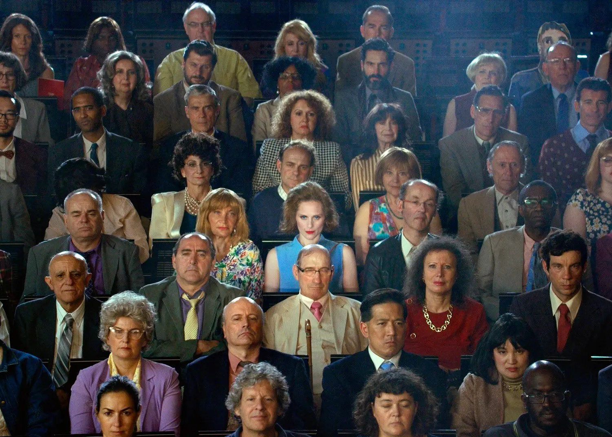
Theatre
One way to describe a theatre is a place where people are alone, meanwhile together. When engrossed in a play, each person directs their attention towards the stage, resulting in limited interaction among the audience. Despite this, they are not physically isolated, sharing the experience with others in the same space.
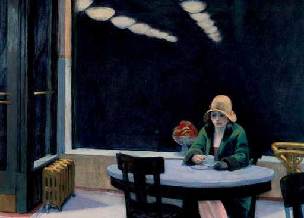
Modernization
In contemporary society, what was once considered private has now become a matter of public interest. People are acutely aware of how they are perceived by others. This era has ushered in a new level of transparency, with individuals willingly sharing aspects of their lives that were once kept behind closed doors. As a result, the distinction between public and private spheres has become less defined. This evolution prompts a reevaluation of personal boundaries and the concept of privacy in the modern age.
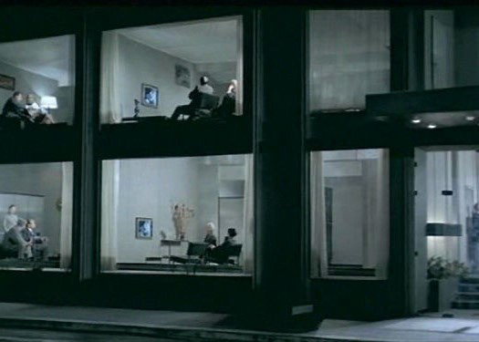
Pleasant solitude x urban isolation
Design often overlooks the individual’s need for privacy and a sense of safety, especially in urban settings. It’s crucial to distinguish between “urban isolation,” a sense of disconnection from society, and “pleasant solitude,” which entails feeling secure and serene in a crowd. The Farsi term “Khalvat” encapsulates this concept, representing the enjoyable experience of being alone in Iranian artistic and literary culture.
Location
Around the four light poles surrounding the water fountain in Piazzale Gabrio Rosa, Corvetto, a neighborhood situated in the southeast of Milan, is primarily characterized by residential apartments and educational institutions. While vibrant during the day, it tends to become tranquil and somewhat less secure at night.
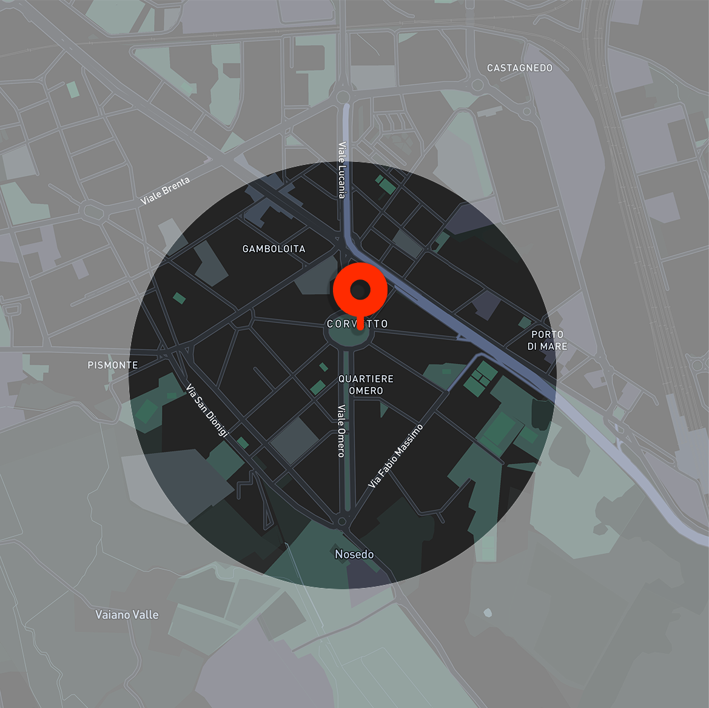
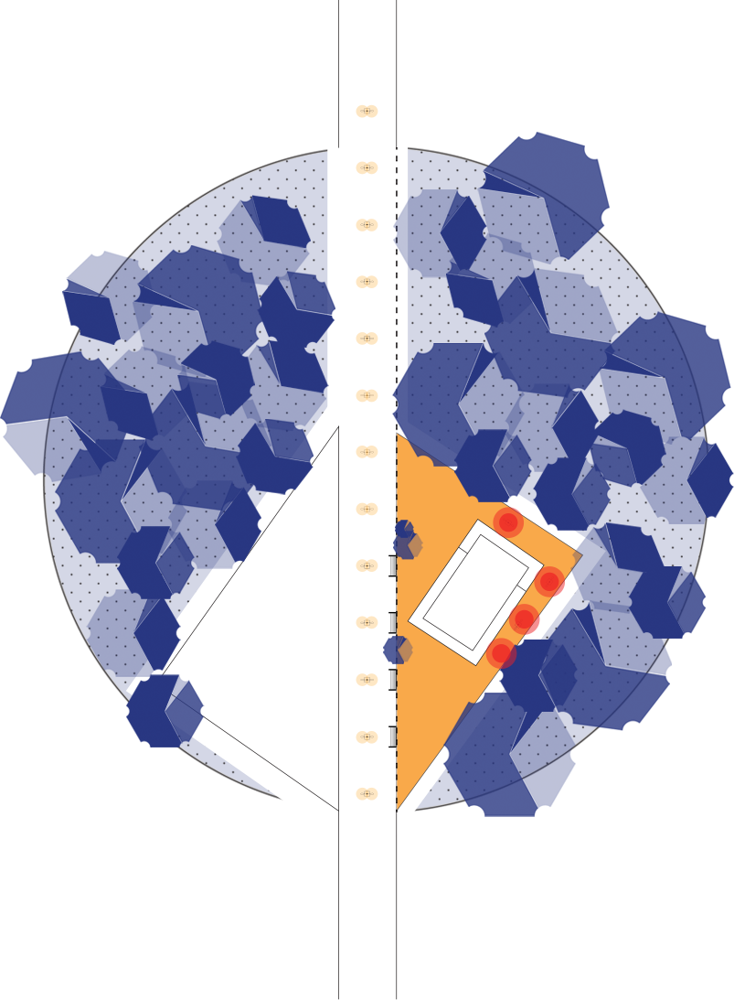
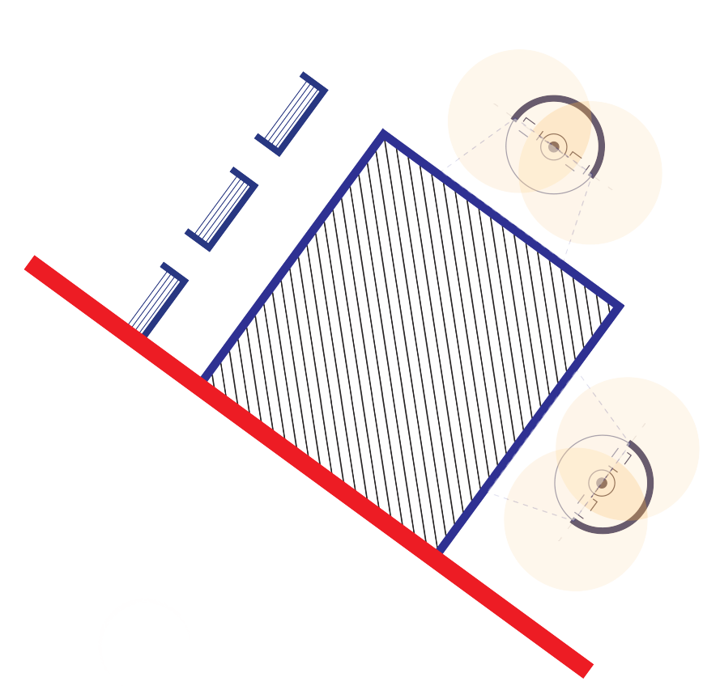
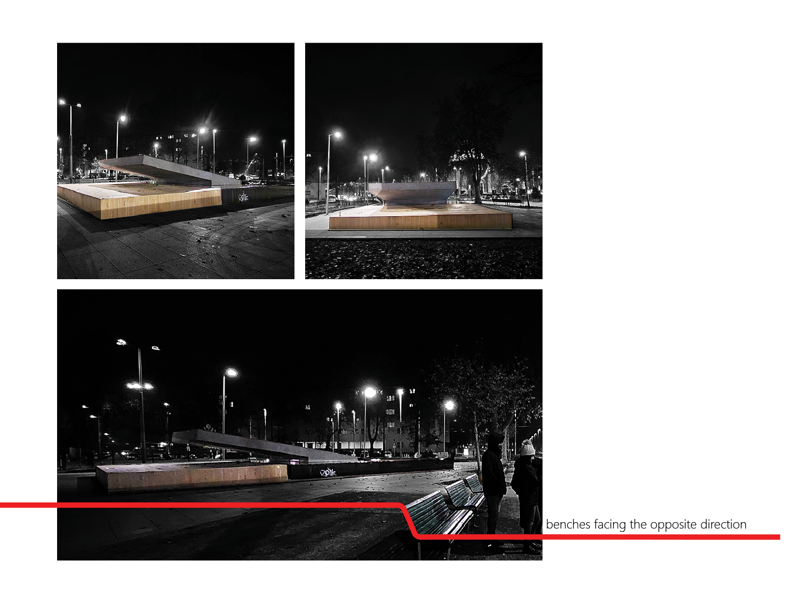
Safety & solitude
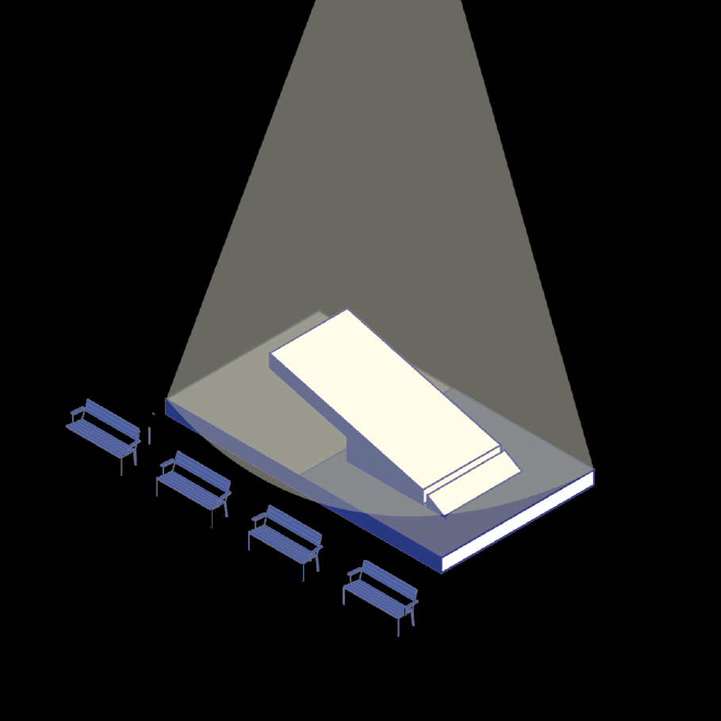
The project aims to enhance safety and ambiance at the water fountain in Piazzale, which has become a concerning gathering spot due to poor lighting. It also provides a personal haven for individuals seeking tranquility amidst urban activity, offering an alternative to the comfort of home.
Structure
The circular installation is divided vertically into two sections: one side features a transparent surface facing the water fountain, while the other side is mirrored, reflecting the interior. This design ensures that no matter where the user looks, the water fountain remains visible.
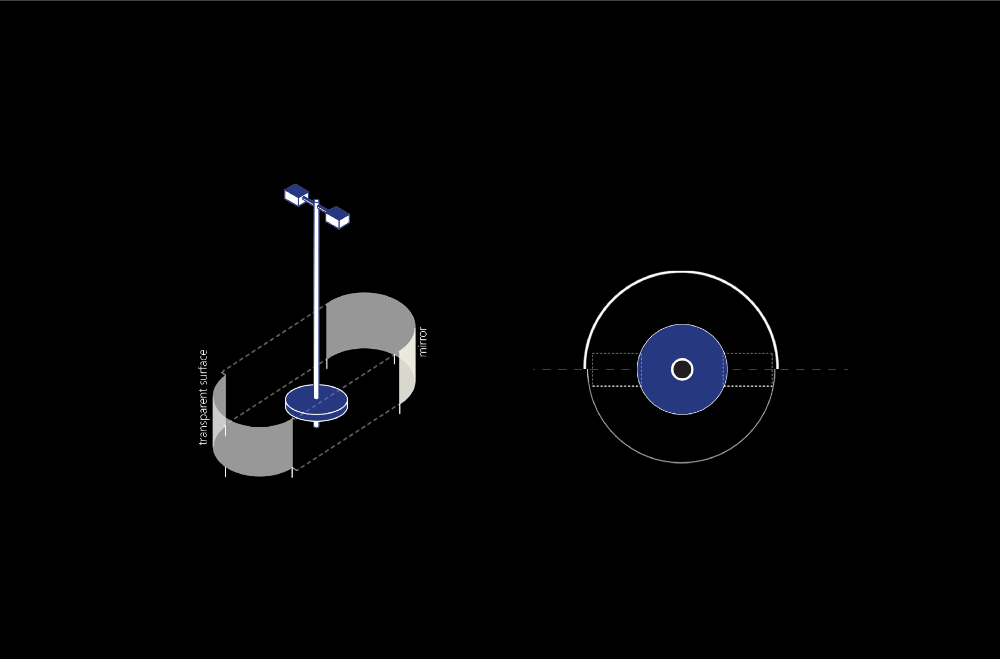
The curtain
Adding an extra layer of functionality, a second semi-transparent panel slides in the opposite direction, enhancing privacy and creating a more personalized space.
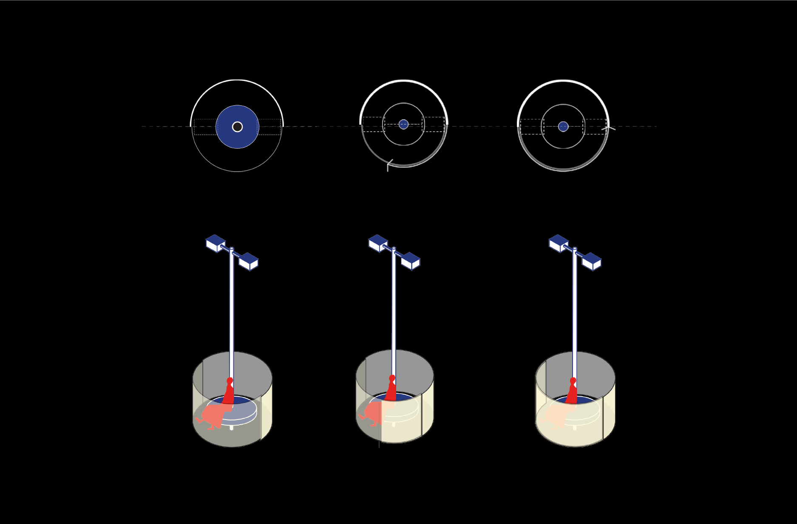
Sections
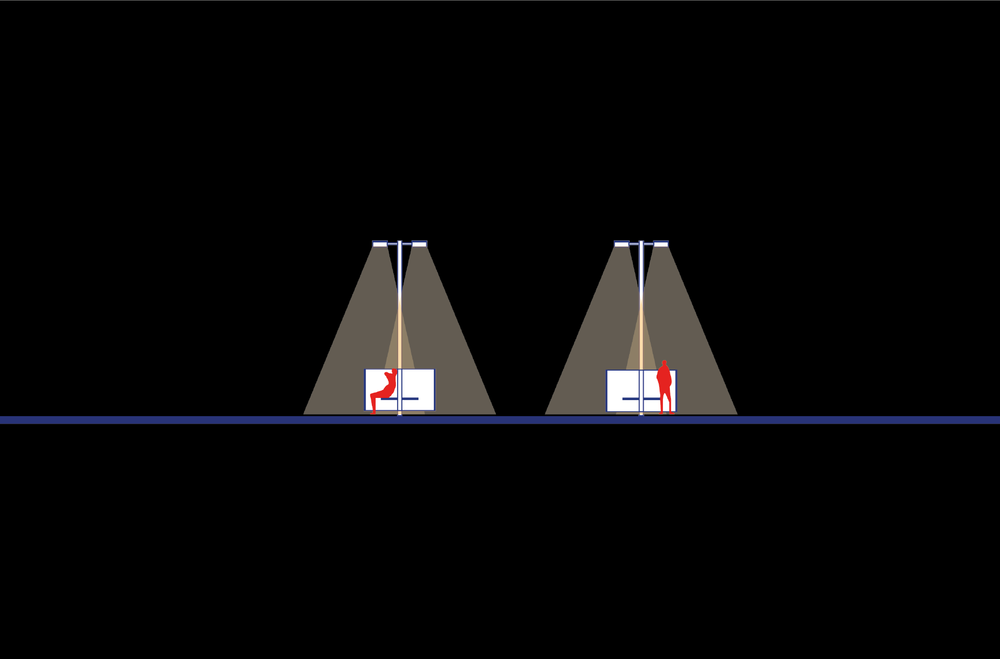
The opening
The transparent surface facing the water fountain smoothly slides open to allow entry.
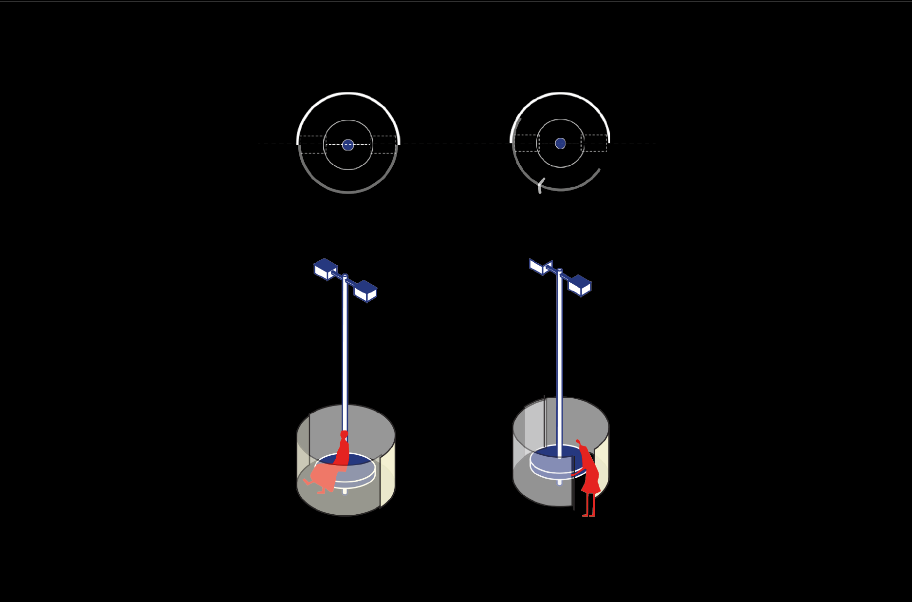
Selective connection
This innovative design offers the flexibility to synchronize with the ambient street lights, allowing the user to choose whether they want to invite others to share in their pleasant solitude or prefer to enjoy it alone.
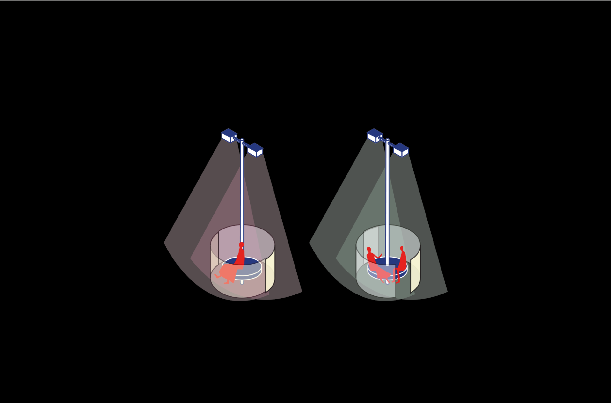
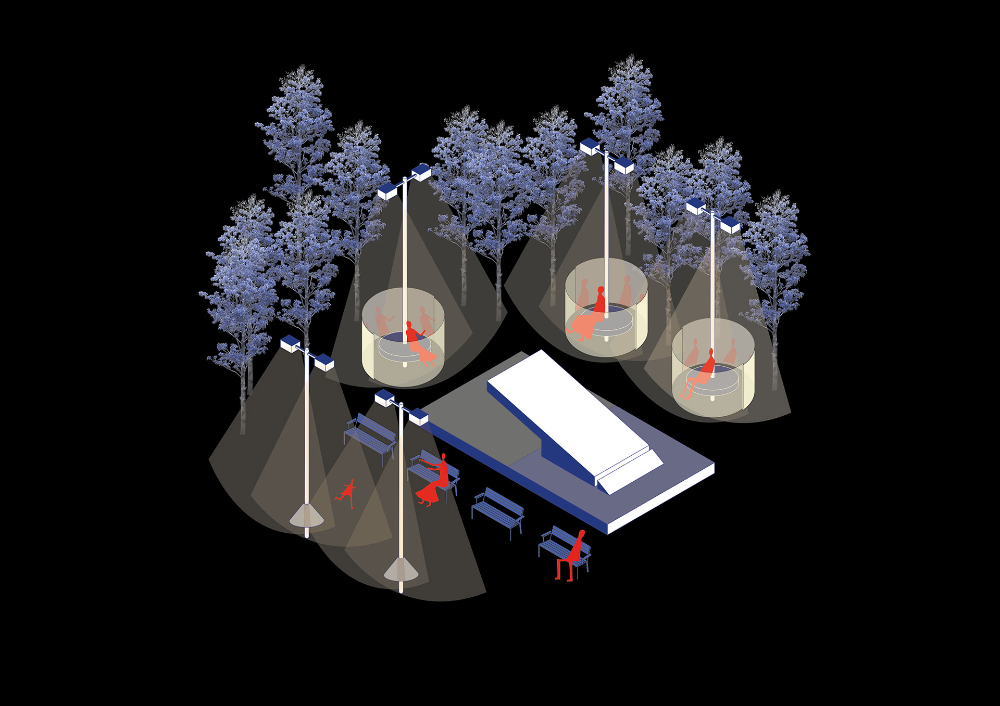
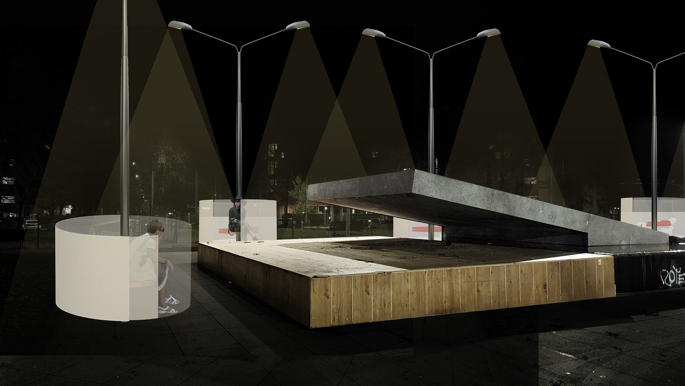
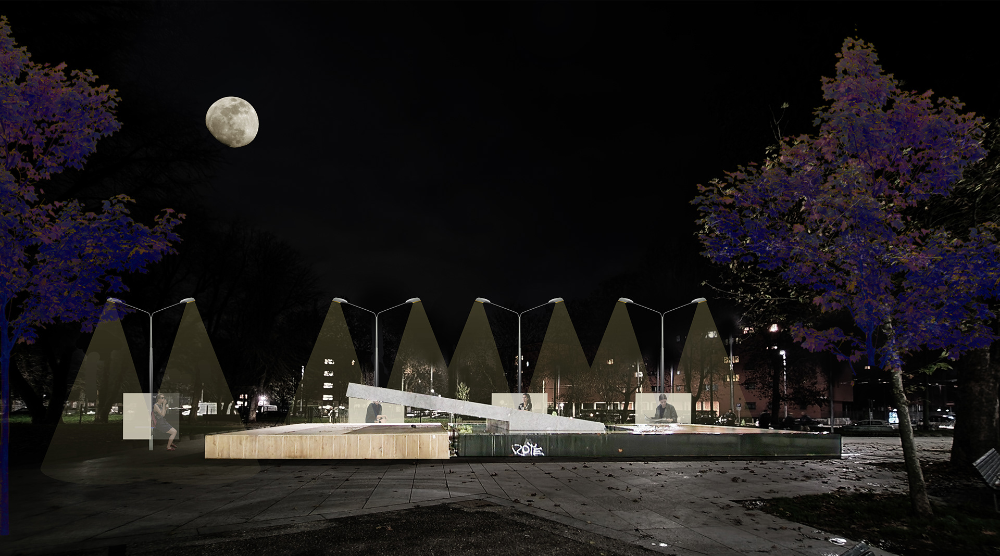
I work across architecture, scenography, and design. I'm interested in how people experience space, especially in cities, and how stories can change the way a place is perceived. For me, projects are often a way to investigate a question and understand a subject rather than arrive at a fixed answer.